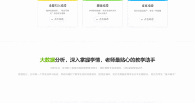
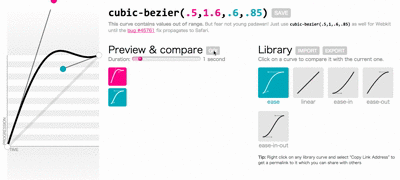

拥有游戏般的学习体验是洋葱数学一直追求的设计方向。动画Animation和转场动效Transition大量存在于各种游戏中，在创造情感体验上起到很重要的作用。所以我们想把动画效果加入首页，希望能达到这样几个目的：
- 为全站注入一种性格
- 帮助吸引视线，创造一种叙事感
- 改善onboarding体验，以期改善留存率
详细请访问洋葱数学


个性化的动画
我们采用css transition移动图片的方式实现动画。尽管有默认的transition-timeing-function，以及各类动画库，但要创造有个性的动画，做好的方式还是自定义。
Tips：为了制造一种bounce-in的动画效果，我需要在设置动画的transition-timing-function时用到cubic-bezier属性。这里我常用一个工具来帮助我们这些数学不好的人，可视化根据曲线设置的动画。check this out cubic-bezier.com

总结
为了保证体验的一致性，我将同类的或相似的动画统一使用一种参数。以后的开发中可以抽出来集合成动画效果库，规范命名方便日后使用。